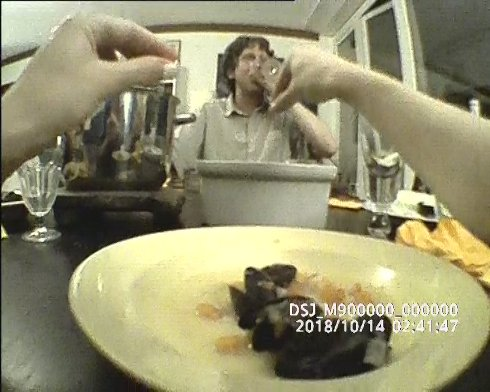

Yulia Lokshina & Angela Stiegler
Yulia Lokshina geb. 1986 in Moskau. Lebt und arbeitet in München und Bonn. Seit 2011 Studium der Dokumentarfilmregie an der HFF München. Im Zuge ihrer Arbeit am Forum Internationale Wissenschaft in Bonn entstehen audiovisuelle Projekte an der Schnittstelle von Film und Wissenschaft.
Angela Stiegler geb. 1987 in München. Studium an der Akademie der Bildenden Künste München. Ihre Videos, Performances und skulpturalen Arbeiten befassen sich zentral mit dem Körper als Ausdrucksmedium.
Gemeinsame Projekte Saloon, Atelier für Medienkunst, München 2018 (Film- und Diskussionsreihe) | Sent from my phone, Athen 2018 | Anti Körper, Galerie der Künstler München 2018 | Two A.M., Kunsthalle Zürich, Fridericianum Kassel 2016 | Mitglied der Künstler*inneninitiative >K< („Letters to K“, München 2018)
Subjective Hill
2019 | Video, Sound
35 min | Englisch
K: Julia Swoboda | SD+M: Yorgia Karidi | P: Swiss Center for
Affective Sciences, Universität Genf, Embassy of Foreign Artists
Geneva, Hochschule für Fernsehen und Film München
Was ist der Unterschied zwischen realer und drohender Gefahr? In einer Simulation kombinieren wir Perzeption und Projektion, um den Ausgang einer Situation vorherzusagen oder einer Eskalation vorzubeugen. Im Labor wird untersucht, wie wir unseren Körper und Geist zu kontrollieren lernen. Ausgehend von polizeilichen Techniken der Überwachung und Deeskalation macht sich SUBJECTIVE HILL die autonome Kraft der BodyCam (am Körper getragene Kamera) zunutze.